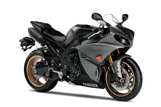
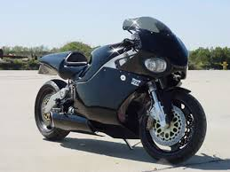
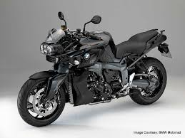

Yamaha launched the YZF-R1 after redesigning the Genesis engine to create a more compact engine by raising the gearbox input shaft and allowing the gearbox output shaft to be placed beneath it. This design feature was revolutionary, called a 'stacked gearbox', it has set a precedent for other manufacturers to follow. This "compacting" of the engine made the total engine length much shorter overall, thereby, allowing the wheelbase of the motorcycle to be shortened significantly. This, in turn, allowed the frame design to place the weight of the engine in the frame to aid handling because of an optimized center of gravity. The swingarm was able to be made longer without compromising the overall wheelbase, which was a short 1385mm. These features, combined with a steep fork angle, exceptional brakes and racing streamlining, created a bike that was unbeatable on the race track at the time. Four Kehin CV carburetors of 40mm diameter fed fuel to the engine, 140 bhp was claimed by the factory, at the countershaft. USD 41mm front forks supplied by KYB mounted 300mm semi-floating disk brakes. The instrument panel was revolutionary, having an electrical problem, self diagnosis system inbuilt, and digital speed readout. The exhaust system utilised an EXUP valve, which controlled the exhaust gas flow, to maximise engine power production at all revs, creating a high powered but also torquey engine. The twin headlights were powerful, allowing high speed travelling at night. The bike had a compression ratio of 11.8:1 with a six-speed transmission and multi-plate clutch. The Yamaha YZF-R6 was introduced in 1999 as the 600 cc version of the R1 super bike. .
The MTT Y2K Turbine Motorcycle, also known as the Y2K Turbine Superbike, is a wheel-driven non-production[citation needed] motorcycle powered by a turboshaft engine. When MTT president Ted Mclntyre decided to add a motorcycle to his firm's range, he appointed Christian Travert, a former bike racer and custom builder, to head the project. Early models were powered by a Rolls-Royce-Allison Model 250-C18 gas turbine producing 320 shp (240 kW) at 52,000 rpm.[better source needed]}[1] Unlike some earlier jet-powered motorcycles where a massive jet engine provided thrust to push the motorcycle, the turboshaft engine on this model drives the rear wheel via a two-speed gearbox and chain and sprocket. The motorcycles are produced on demand and made to order for buyers.The turbines used in the motorcycles are second-hand, having reached the United States FAA-mandated running time limit, after which they must be rebuilt regardless of condition. MTT refurbishes the engines and extends a long term warranty with the purchase of every bike. The MTT Turbine Superbike does not require jet fuel to operate. MTT has fueled the Y2K with diesel, kerosene and Bio-Fuel with excellent results. In 2006, MTT released the "Street Fighter," at the Las Vegas SEMA show. The Street Fighter began the standardization of the more powerful 420 hp (310 kW) turbine from the Allison 250-C20B engine. in 2015, MTT released two new models. The first was a three-wheeled trike with the 420 HP turbine engine. It features the latest technology and enhanced safety features. The second new bike released by MTT is the 420-RR (Race Ready). The 420-RR is the most extreme bike that MTT produces based on technical advances, aerodynamics and Race Ready enhancements.
All BMW Motorrad's motorcycle production takes place at its plant in Berlin, Germany,[7] although some engines are manufactured in Austria, China, and Taiwan. Most of the current motorcycles in BMW Motorrad's range were designed by David Robb, who was the company's chief designer from 1993 to 2012 when he was replaced by Edgar Heinrich.[8][9][10] BMW Motorrad produced 82,631 motorcycles in 2009,[4] compared with 104,220 in 2008,[5] a fall of 20.7% The most popular model is the R1200GS and its sibling R1200GS Adventure, which sold 24,467 units – accounting for 28% of BMW's annual production.[11] Current production includes a variety of shaft, chain, and belt driven models, with engines from 650 cc to 1,649 cc; and models designed for off-road, dual-purpose, sport, and touring activities. In 2008, BMW introduced the DOHC Boxer HP2 Sport,[12] and entered the serious off-road competition motorcycle market with the release of the BMW G450X motorcycle.[13] BMW Motorrad motorcycles are categorized into product families, and each family is assigned a different letter prefix. The current families are: C series – Maxi-scooters called Urban Mobility Vehicles by BMW F series – parallel-twin engines of 798 cc capacity, featuring either chain or belt drive. Models are F650GS, F700GS, F800GS, F800R, F800S, F800GT and F800ST. The F650GS was powered by a single cylinder 652cc Austrian built Rotax engine. G series – single-cylinder engines of 449 to 652 cc capacity featuring chain drive. Models are G450X (now discontinued), G650GS, G650 Sertão, G650 Xmoto, G650 Xchallenge and G650 Xcountry. The 450 cc engines are manufactured by Kymco in Taiwan.[14] The 2009 and 2010 650 cc engine parts were manufactured by Rotax in Austria, with the engine being assembled by Loncin Holdings, Ltd in China.[15][16] R series – twin-cylinder boxer engines of 1,170 cc capacity featuring shaft drive. Models are R1200GS, R1200R, R1200RT, BMW R1200RS, R1200S and R nineT. K series – four-cylinder engines of 1,157 to 1,649 cc capacity featuring shaft drive. Models are K1200LT, K1300GT, K1300R and K1300S. In 2011, BMW Motorrad launched the six-cylinder 1,649 cc K1600GT and K1600GTL.[10] S series – S1000RR – sport bike with transverse-mounted, 999 cc inline-four engine. Models included S1000R, S1000XR Racing[edit]